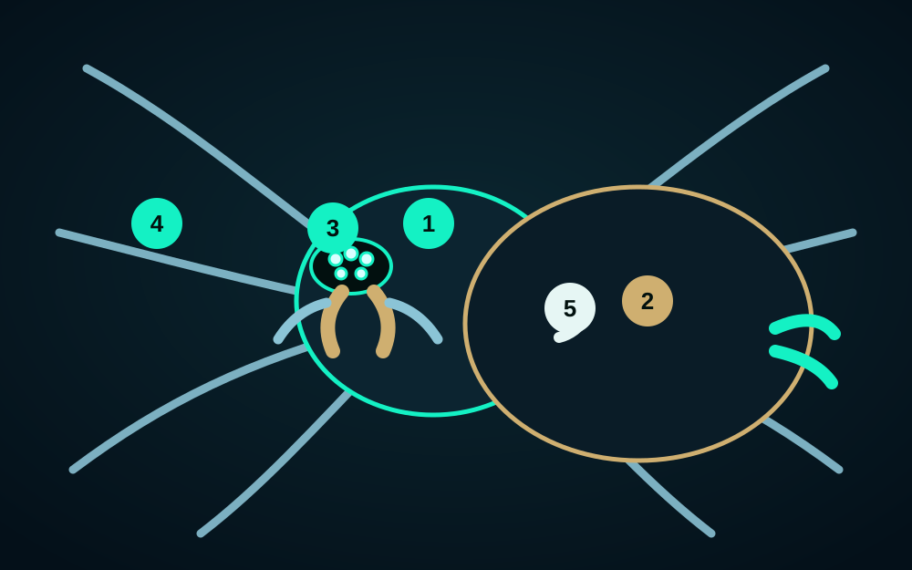
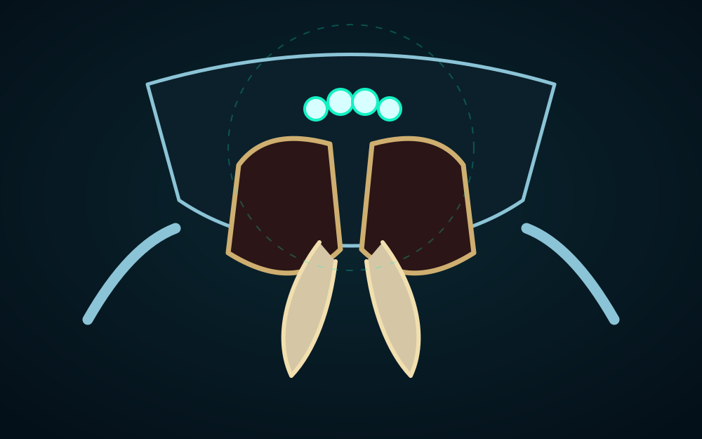
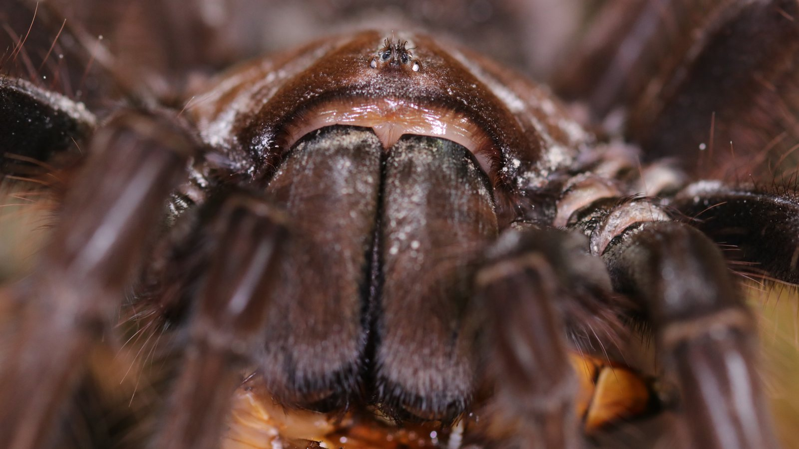
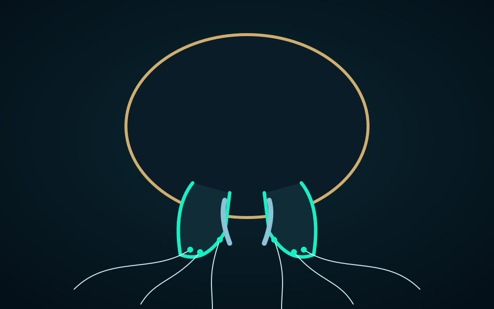
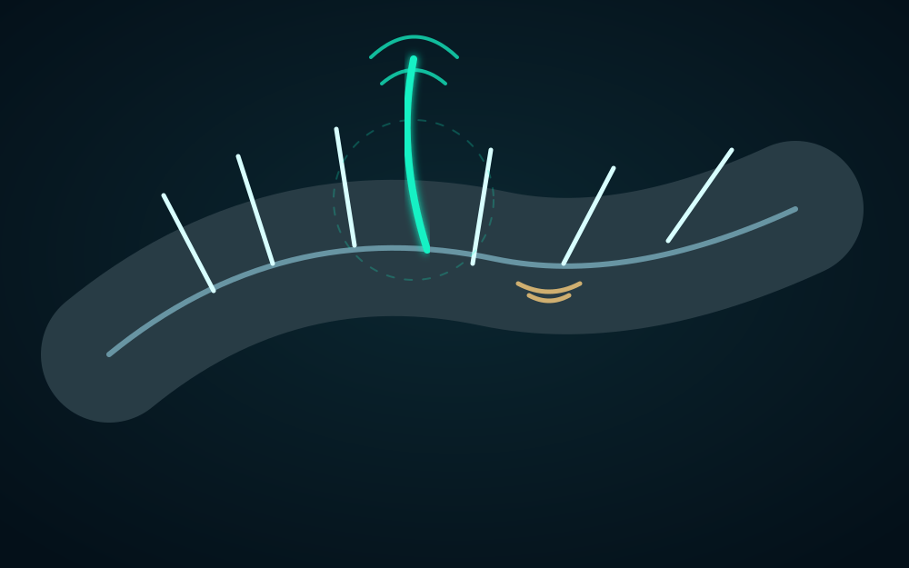
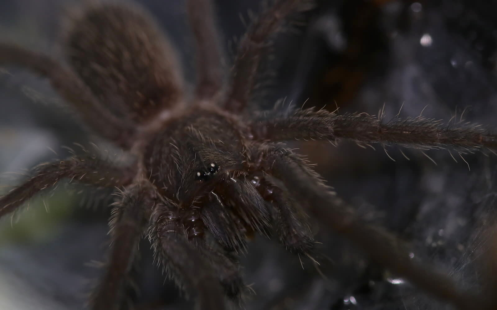
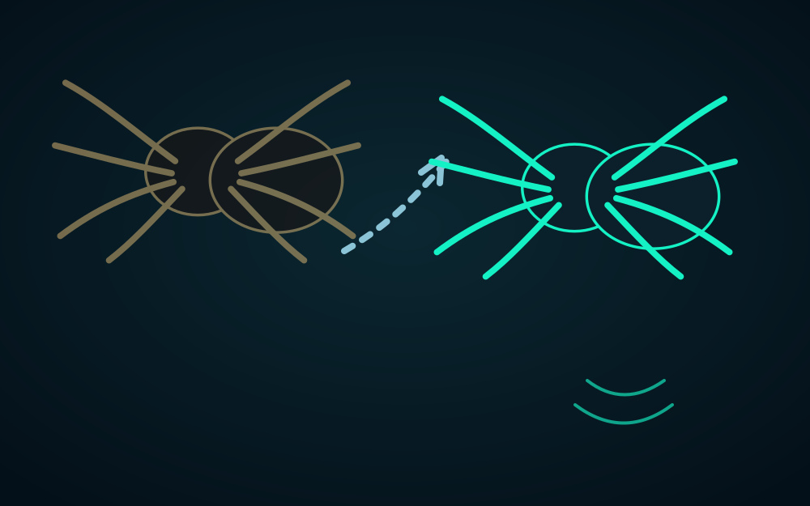

Prosoma
Also called the cephalothorax. It carries the eyes, chelicerae, pedipalps, and four pairs of walking legs beneath a firm dorsal carapace.
Spider anatomy
Spiders are arachnids, not insects. Their compact design joins a sensory and mechanical front section to an abdomen that houses much of the animal’s internal machinery—including silk production.

Body map
The diagram simplifies a dorsal view so each landmark is easy to locate. The real photograph below it shows how the same two-part body plan looks on an actual tarantula, where hairs, posture, and perspective can hide the boundaries.


Also called the cephalothorax. It carries the eyes, chelicerae, pedipalps, and four pairs of walking legs beneath a firm dorsal carapace.
The opisthosoma is softer and usually unsegmented externally. It contains much of the digestive, reproductive, circulatory, respiratory, and silk-producing anatomy.
Simple eyes sit near the front. Below them are the chelicerae and their fangs, with the shorter pedipalps alongside.
Each leg has seven main segments from coxa to tarsus. Muscles flex many joints while internal fluid pressure contributes to extension.
This narrow waist joins the prosoma and abdomen. It is flexible enough to let the abdomen move while nerves, gut, blood vessels, and other structures pass through it.
Under the surface
Here the image has one job: show the structure being discussed. Simplified diagrams are used when a normal photograph would hide, blur, or misrepresent the anatomy; your photographs are added only where they make a useful real-world reference.

The paired chelicerae are the first appendages. Each carries an articulated fang used to grasp and puncture prey, with venom delivered through the fang. Spiders then take in externally liquefied food rather than chewing with jaws.

Pedipalps are the shorter pair of appendages immediately beside the chelicerae. They are important in sensing and prey handling. In mature males, the final segments carry specialized palpal organs used to transfer sperm.

Spinnerets are movable appendages at the rear of the abdomen. Microscopic spigots on them release silk from internal glands, allowing spiders to combine fibres for retreats, draglines, egg sacs, prey capture, and vibration-sensitive structures.

Book lungs open through slits on the underside of the abdomen. Tarantulas have two pairs. Inside, many thin lamellae create a large surface for gas exchange; other spider groups may combine book lungs with a tracheal system.

Different setae can detect contact and moving air; especially long trichobothria are exquisitely sensitive to air currents. Separate slit sensilla embedded in the exoskeleton detect strain and vibration, adding another channel of mechanical information.


A rigid exoskeleton cannot grow continuously. Before a molt, a new cuticle forms beneath the old one. The spider then frees itself from the old exoskeleton, expands the new body covering while it is still soft, and waits for it to harden.
Read further
This guide is a visual introduction, not a dissection manual. The references below provide more detail and diagrams.